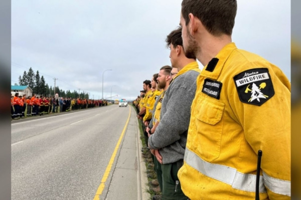

亚省山火管理局成员在道路两旁向殉职的同事表示敬意。 （亚省山火管理局） 【2024年08月06日讯】（记者王兰多伦多报导）一名卡加利消防员周六（8月4日）在贾斯珀东北部试图扑灭山火时不幸身亡，周日，众多消防人员、军队成员与其他急救人员为其哀悼。据CTV报导，事故发生在周六下午 2 点左右，在失控的贾斯珀山火现场工作的 24岁亚省消防员被一棵树击中受重伤，被直升机送医后不久身亡，他的身份并未被公布。加拿大骑警表示，他是卡尔加里居民，来自卡尔加里以北约 200 公里的落矶山之家消防基地。
亚省林业和公园厅长洛文（ Todd Loewen） 表示，出于对隐私的尊重，正在与遇难消防员家人合作，并公布任何进一步的细节。
贾斯珀野火综合指挥部周日发表声明说：“这起事件凸显了扑灭山火时，消防员每天都会遇到的危险。”
声明补充说：“我们永远感谢急救人员为保护加拿大人和他们的社区而做出的个人牺牲。” “在这个困难的时刻，我们的心与他们的家人和朋友同在。”
亚省省长贺思敏 (Danille Smith) 表示，她感谢勇敢的山火消防员，每天冒着生命危险保护他人。
总理特鲁多在 X 上表示，对这一消息感到心痛，赞扬这名殉职的 24 岁年轻人有坚定不移的勇气。
责任编辑：严枫